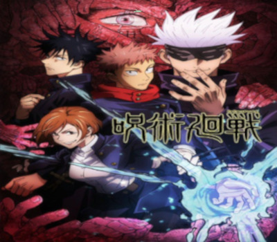

Jujutsu Kaisen
Jujutsu Kaisen é um anime que fala sobre " maldições " e " feiticeiros Jujutsu ", estes feiticeiros jujutsu são formados na academia / escola Jujutsu. Nem todos os humanos conseguem exergar as maldições, e isso torna a existência das maldições e feiticeiros jujutsu discreta.
Níveis em Jujutsu Kaisen
As maldições e feiticeiros jujutsu estão divididos em níveis, que representam as suas forças. Esses níveis variam de Nível 4 à Nível Especial
. Coloque o mouse nos níveis abaixo para saber a força de cada nível:- Nível 4 ou inferior.
- Nível 3.
- Nível 2.
- Nível 1.
- Nível Especial.